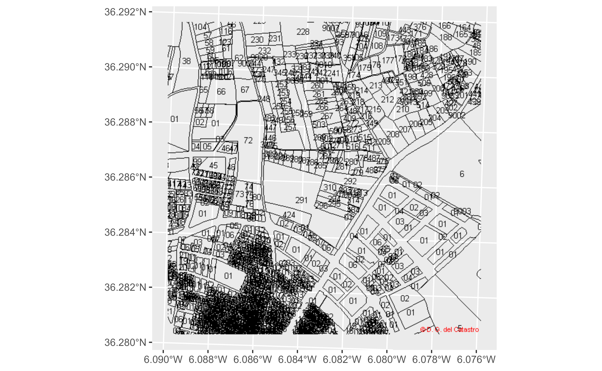
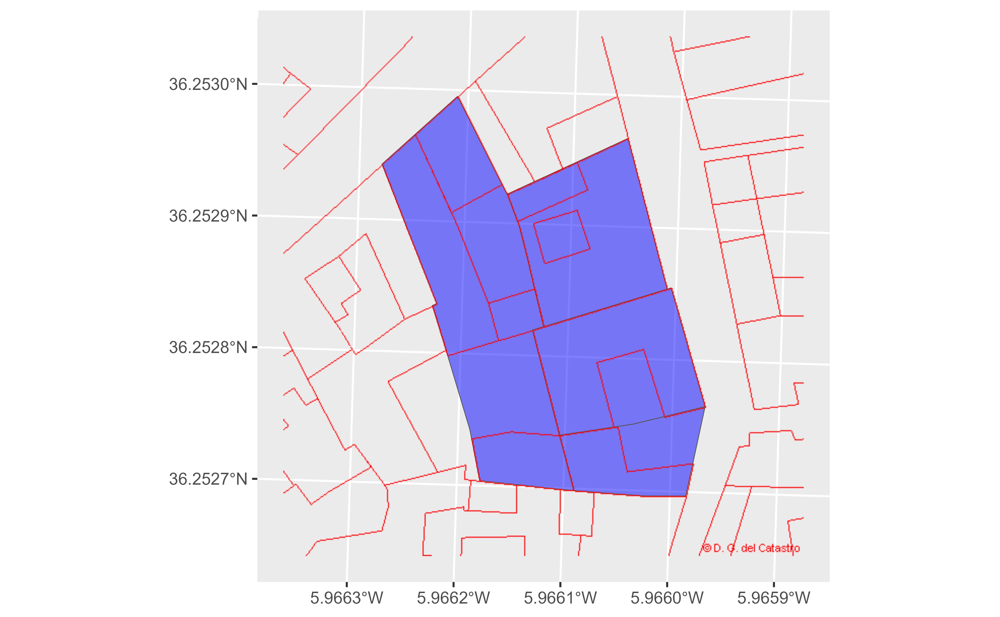

Get geotagged images from the Spanish Cadastre. This function is a wrapper of
mapSpain::esp_getTiles().
Usage
catr_wms_get_layer(
x,
srs,
what = "building",
styles = "default",
update_cache = FALSE,
cache_dir = NULL,
verbose = FALSE,
crop = FALSE,
...
)Arguments
- x
See Details. It could be:
A numeric vector of length 4 with the coordinates that defines the bounding box:
c(xmin, ymin, xmax, ymax)A
sf/sfcobject, as provided by the sf package.
- srs
SRS/CRS to use on the query. To check the admitted values check catr_srs_values, specifically the
wfs_servicecolumn. See Details.- what
Layer to be extracted. Possible values are
"building","parcel","zoning","address". See Details.- styles
Style of the WMS layer. See Details.
- update_cache
A logical whether to update cache. Default is
FALSE. When set toTRUEit would force a fresh download of the source file.- cache_dir
A path to a cache directory. On missing value the function would store the cached files on a temporary dir (See
base::tempdir()).- verbose
Logical, displays information. Useful for debugging, default is
FALSE.- crop
TRUEif results should be cropped to the specifiedxextent,FALSEotherwise. Ifxis ansfobject with onePOINT, crop is set toFALSE.- ...
Arguments passed on to
mapSpain::esp_getTilesresResolution (in pixels) of the final tile. Only valid for WMS.
bbox_expandA numeric value that indicates the expansion percentage of the bounding box of
x.transparentLogical. Provides transparent background, if supported. Depends on the selected provider on
type.maskTRUEif the result should be masked tox.
Value
A SpatRaster is returned, with 3 (RGB) or 4 (RGBA) layers. See
terra::rast().
Details
When x is a numeric vector, make sure that the srs matches the
coordinate values. When x is a sf object, the value srs is ignored.
The query is performed using EPSG:3857 (Web Mercator)
and the spatial object is projected back to the SRS of the initial object. In
case that the tile looks deformed, try either providing bbox on EPSG:3857
or projecting your sf object to sf::st_crs(3857).
Layers
The parameter what defines the layer to be extracted. The equivalence with
the
API Docs
equivalence is:
"parcel": CP.CadastralParcel
"zoning": CP.CadastralZoning
"building": BU.Building
"buildingpart": BU.BuildingPart
"address": AD.Address
"admboundary": AU.AdministrativeBoundary
"admunit": AU.AdministrativeUnit
Styles
The WMS service provide different styles on each layer (what parameter).
Some of the styles available are:
"parcel": styles :
"BoundariesOnly","ReferencePointOnly","ELFCadastre"."zoning": styles :
"BoundariesOnly","ELFCadastre"."building" and "buildingpart":
"ELFCadastre""address":
"Number.ELFCadastre""admboundary" y "admunit":
"ELFCadastre"
Check the API Docs for more information.
See also
mapSpain::esp_getTiles(), tidyterra::geom_spatraster_rgb(),
terra::plotRGB().
INSPIRE API functions:
catr_atom_get_address_db_all(),
catr_atom_get_address(),
catr_atom_get_buildings_db_all(),
catr_atom_get_buildings(),
catr_atom_get_parcels_db_all(),
catr_atom_get_parcels(),
catr_wfs_get_address_bbox(),
catr_wfs_get_buildings_bbox(),
catr_wfs_get_parcels_bbox()
Other spatial:
catr_atom_get_address(),
catr_atom_get_buildings(),
catr_atom_get_parcels(),
catr_wfs_get_address_bbox(),
catr_wfs_get_buildings_bbox(),
catr_wfs_get_parcels_bbox()
Examples
# \donttest{
# With a bbox
pict <- catr_wms_get_layer(c(222500, 4019500, 223700, 4020700),
srs = 25830,
what = "parcel"
)
library(mapSpain)
library(ggplot2)
library(tidyterra)
ggplot() +
geom_spatraster_rgb(data = pict)

# With a spatial object
parcels <- catr_wfs_get_parcels_neigh_parcel("3662303TF3136B")
# Transform
parcels <- sf::st_transform(parcels, 3857)
# Use styles
parcels_img <- catr_wms_get_layer(parcels,
what = "buildingpart",
bbox_expand = 0.3,
styles = "ELFCadastre"
)
ggplot() +
geom_sf(data = parcels, fill = "blue", alpha = 0.5) +
geom_spatraster_rgb(data = parcels_img)

# }